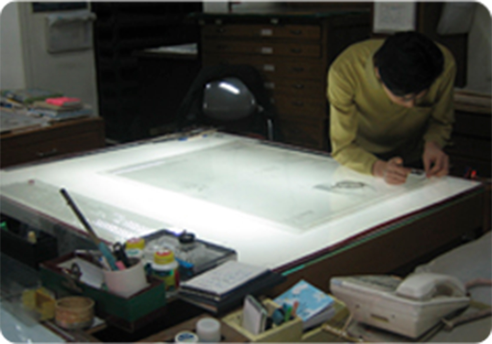
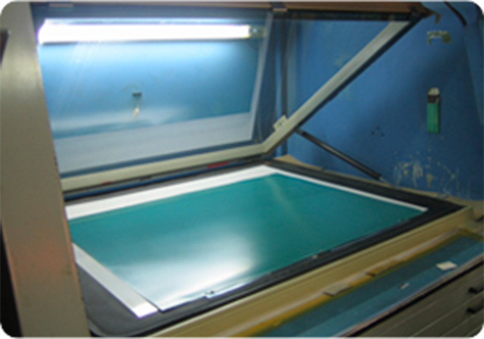
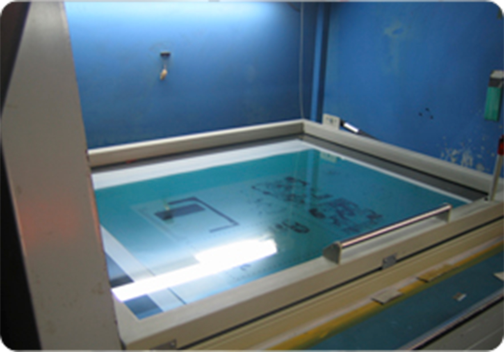
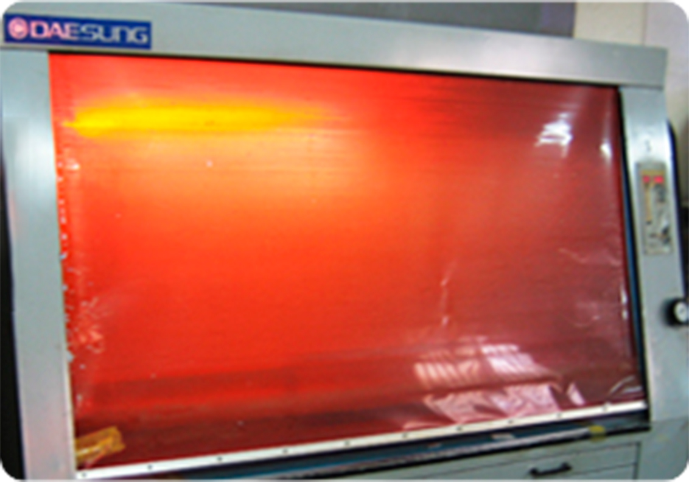
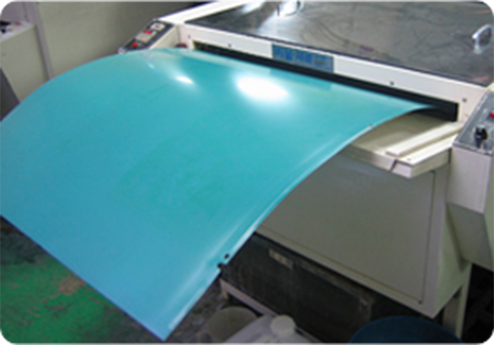
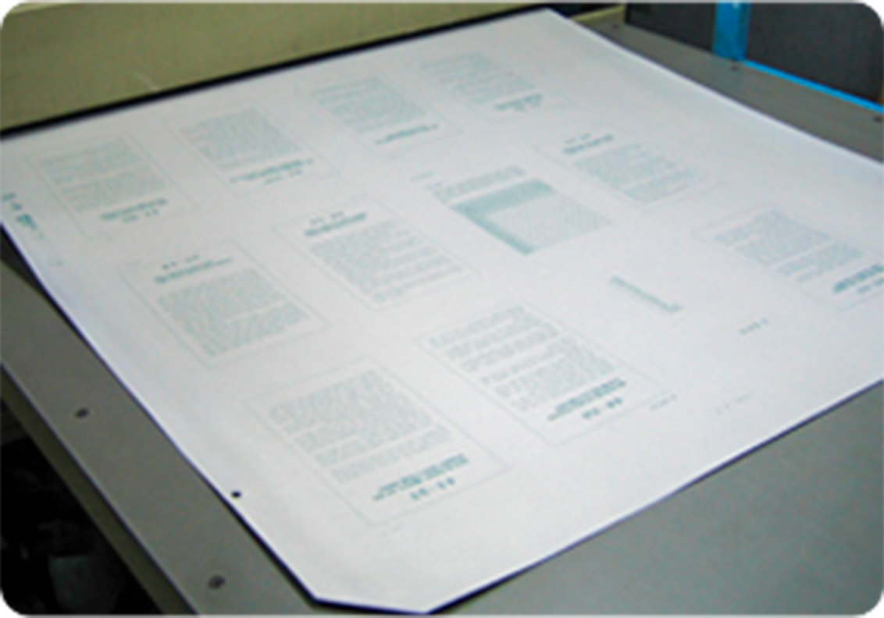

+ 소부과정 자세히 보기


① 작업할 필름을 점검 후 소부실로 넘긴다.
② 감광장치에 소부판을 놓는다.


③ 필름과 소부판을 올리고 *밀착시킨다.
④ 감광장치에서 일정시간 자외선을 비춘다.


⑤ 감광된 소부판을 후처리기에 넣는다.
⑥ 감광실에서 자외선에 노출된 부분이 제거되고,
인쇄작업이 가능한 소부판이다.
*③
이때 완전히 밀착시키지 않으면 글씨가 약간 흐리거나 2중으로 인쇄된 듯한 결과물 나온다.
▼▼ 영상으로 자세히 보기 ▼▼